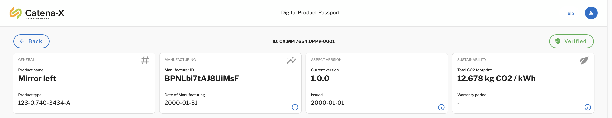
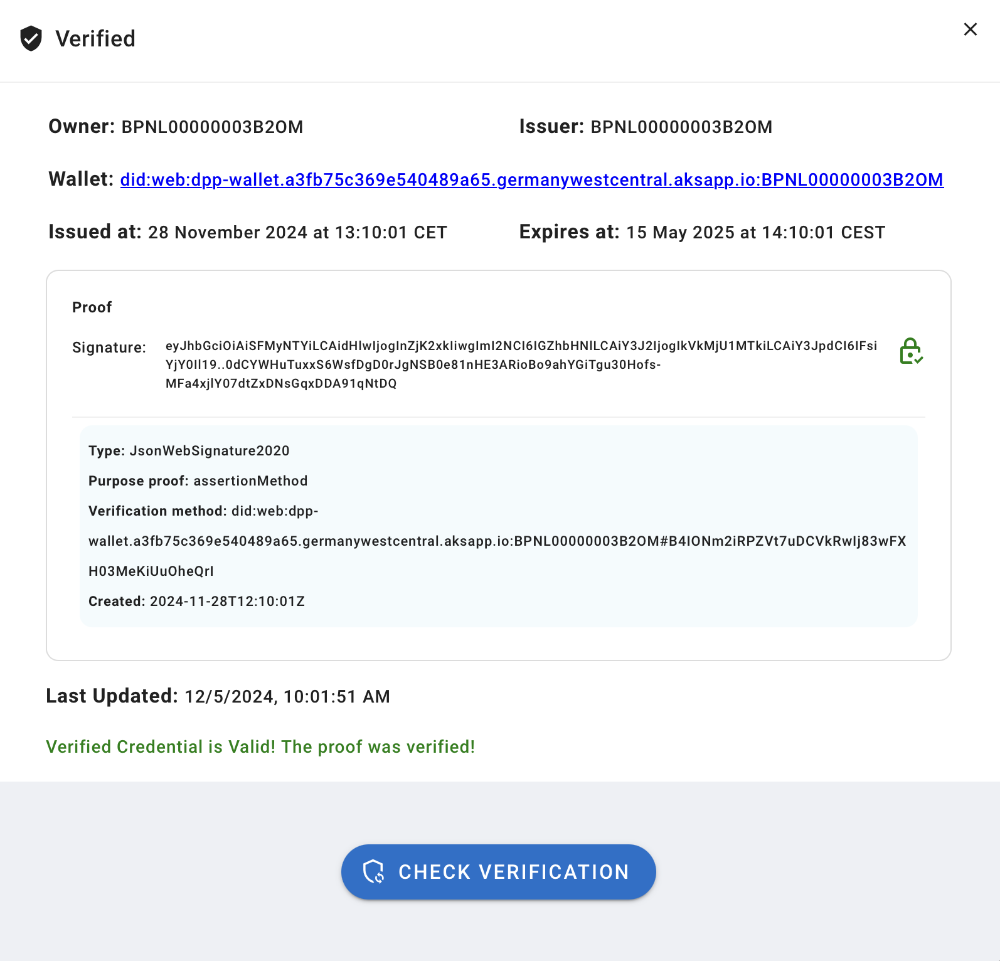

Deprecated
This tutorial is kept for reference. It may not match the current Eclipse Tractus-X release. All tutorials
Tractus-X Digital Product Passport Workstream
Third Tractus-X Community Days - 5,6 December 2024 - Stuttgart
Description¶
The digital product passport application provides a consumer user interface to request a battery passport from a battery manufacturer using the standardized components and technologies in a Catena-X network. The passport will be displayed in a human-readable from any browser. The data exchange standards given by Catena-X are used to provide the battery passport to different personas (roles) in the network.
In particular, the appliction is used to access the battery passport data provided by battery manufacturer. By scanning QR-code or knowing the manufacturer and battery-ID, a user can request the passport through Eclipse Dataspace Connectors (EDCs) over the Catena-X network. The passport provider will provide data attributes that is only visible to a permitted signed-in user.
Problem Statement¶
Company-X has manufactured cars for the market in Germany. The cars were built using components from different companies. A surprise inspection is scheduled by a governmental environment auditor in 5 months. This generates a problem for Company-X, because all the data from the parts is not available. Company-X sends an email to their supplier companies, however their send incomplete data in different formats and structures, which confuses Company-X engineers when calculating the carbon footprint and makes the compliance to the regulations really complicated. It is hard to keep track from the latest regulations and convince supplier companies to give all their data without loosing control over it. So, the engineers decide to use Catena-X for the data exchange. Per email Company-X request its suppliers to provide the data while still maintaining data sovereignty, simply by following the Catena-X standards for the Digital Product Passport which comply with the regulations of the inspection.
You are one of the suppliers from Company-X. To maintain your client, you are required to create a Digital Product Pass for your Part, so that Company-X can obtain the total PCF value from its car. Creating a Car Digital Product Pass and fulfilling the sustainability regulations imposed in the inspection.
Pre-Requisites [ONSITE at the Worksession]¶
* Computer with following programs installed:
* [Insomnia](https://insomnia.rest) > Create an account to be able to import collections.
* Mobile Phone with Browser (for scanning QR codes)
Pre-Requisites [ONLINE]¶
* Kubernetes 1.19+
* Helm 3.2.0+
* PV provisioner support in the underlying infrastructure
* MXD Components:
2 EDCs (Provider + Consumer)
1 Keycloak
1 Vault
* BPN Discovery Service
* EDC Discovery Service
* Discovery Service
* Printer (for printing QR codes)
* Mobile Phone with Browser (for scanning QR codes)
* Insomnia
Preparation¶
Split into groups of five individuals, ensuring each group receives a sheet of paper containing a distinct Part from the test-data.
Caution
Please dont change the given templates for digital twin, only change the provided placeholders
For the tutorial, two distinct paths are available: the Explorer Path and the Builders Path, each tailored to different groups:
1. Explorer Path:¶
This path is ideal for individuals who aim to gain a high-level understanding of the overall logic and processes. It’s particularly suitable for business partners, decision-makers, or anyone interested in a functional overview.
- In this path, you will download pre-prepared requests, modify them, and execute them using Insomnia.
- This approach focuses on simplicity and provides an accessible introduction to the workflow.
→ The Explorer Path can be accessed here
2. Builders Path¶
This path is designed for technically inclined participants who want to dive deeper into the details.
- Clone the repository, follow the instructions in the ReadMe.md file, and navigate through various steps.
- Execute the HTTP requests directly via the terminal (Windows/Mac/Linux).
- This approach offers an in-depth exploration of the technical communication.
→ The Builders Path can be accessed here
Overview¶
Phase 1: Data Provision¶
In this Phase, you as a provider will create a Digital Product Passport of a specific Part of the Arena-X Car. For this phase, you can use your own computer through Visual Studio Code / Notepad ++ or a given Virtual Machine.
Duration: 45 mins¶
The following steps provide a concise overview of the entire tutorial process, which you will primarily complete using the explorers or the developer path
Step 1 - Create a Digital Product Passport (DPP)¶
In this step, you'll create the Digital Product Passport (DPP) by utilizing data from the Product Carbon Footprint and specifications of a specific car part from the Arena.
Step 2 - Create a Digital Twin integrating the generated DPP as a submodel¶
In this step, you will create a Digital Twin of your provided Car part.
Step 3 - Generate the QR Code¶
From this point onward, follow the steps regardless of the path you chose earlier.
* Follow the tutorial on [How to generate a QR code](./qr-code.md)
Step 4 - Print the QR-Code¶
Print the QR Code from the nearby printer and start searching your part in the Car!
Step 5 - Paste QR Code in the Car Part of the Picture¶
Paste it in the specific Part in the Car. Ensure that the QR code is securely attached and easily scannable. Test the scanning functionality to verify that the encoded information can be retrieved accurately.
Great! The data provisioning process has been successfully set up. It is now ready for data exchange within the dataspace. This means that all necessary configurations and integrations have been completed, ensuring efficient data sharing.
Phase 2: Data Consumption¶
In this phase, you as a consumer, will access the Digital Product Pass (DPP) consumer application and retrieve data from the network by either scanning a QR code or entering an ID.
Duration: 45 mins¶
Consumption - Access DPP Application¶
* Follow the tutorial on [DPP Data Consumption](./data-consumption.md)
* You can access the application by using URL and the credentials.
* Scan the available QR Codes on the Car parts or provide the ID.
* Upon scanning, you will obtain the passport of the part.
* Access the UI of the passport to view its details.
* Look for the Product Carbon Footprint (PCF) information for each of the specific car part
* Sum up the PCF values of all individual parts to obtain the aggregate Carbon Footprint value for the entire car.
Phase 3: Data Certification & Verification¶
Duration: 10 mins¶
In order to Certify your Digital Product Passport please follow this instructions, dpp-verification guide.
Once you are done, please repeat the Phase 2: Data Consumption. Scan the QR code and check if you are able to verify your passport with the application.
If everything went well you will be able to see the verification statement in the top right:

If you click in the button:
You will see:

Which are the details, you can see the signature, how created and when + much more!
Now is the question: What do you trust more?
- The one that was certified and has a valid signature proofing that the person that made it was the one that made it, in a specific time, and the data integrity was mathematically validated.
- The one that was a plain unverifiable plain JSON file.
Final Challenge: Car Passport¶
Group name is defined like this:
Note
Session number will be provided by the coaches! There are three sessions, values from [1-3].
Creating the Final Digital Product Passport (DPP) for the Whole Car¶
Scan the available QR codes from various parts of the car and record the Product Carbon Footprint (PCF) value of each specific part.
Compile the following information to create the DPP:¶
* Name: Provide a name for the car model.
* Description: Include a brief description of the car, its features, and specifications.
* ID: Assign a unique identifier for the car.
* Total PCF Aggregate Value: Calculate and add up the PCF values of all individual parts to obtain the aggregate carbon footprint value for the entire car.
* Any other information you may find relevant
For creating the Car passport digital twin use this template
-
After generating the aspect model you need to generate the car digital twin. You can look in the previous phase 2
-
Generate a new UUID4 in this uuid generator page
-
As digital twin "id" add with this schema:
urn:uuid:<your group name> -
Create Part Instance Id of your choice and add to `specificAssetIds["name=partInstanceId"].value
Important
Remember the part instance id you created for later creating the QR code -> CX:<manufacturerPartId>:<partInstanceId>
-
For the
manufacturerPartIduseMPI0012 -
Add the submodel as specified in the digital-twin-provision guide to the twin.
-
Upload your payload to the data service as specified in the digital-twin-provision guide.
-
Generate a QR code as specified in the qr code guide
-
Scan it and access it with the app.
-
Add your QR code to the board!
Congratulations! You have completed the E2E Journey for Digital Product Pass
Links of interest¶
| How to Guides | Link |
|---|---|
| How to deploy DPP Application | deployment.md |
| How to generate a QR code | qr-code.md |
| DPP Data Consumption | data-consumption.md |
| Explorer Path | explorer-path |
| Builder Path | builder-path |
NOTICE¶
This work is licensed under the CC-BY-4.0.
- SPDX-License-Identifier: CC-BY-4.0
- SPDX-FileCopyrightText: 2024 BMW AG
- SPDX-FileCopyrightText: 2024 CGI Deutschland B.V. & Co. KG
- SPDX-FileCopyrightText: 2024 Contributors to the Eclipse Foundation
- Source URL: https://github.com/eclipse-tractusx/digital-product-pass